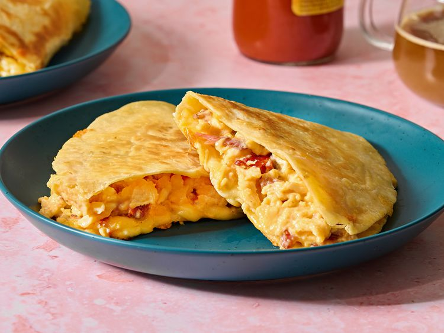

<= Home
Breakfast Quesadilla

This quesadilla has scrambled eggs with bacon and melted cheese inside crispy fried tortillas for an easy pleasing breakfast or brunch.
Ingredients
- 2 large eggs
- 3 slices bacon, cooked and crumbled
- 2 (8 inch) flour tortillas
- 1 teaspoon butter, softened, or to taste
- cooking spray
- ½ cup shredded Colby-Jack cheese
Steps
- Gather all ingredients.
- Crack eggs into a small bowl. Add crumbled bacon and whisk until well combined.
- Spray a large skillet with cooking spray; warm over medium-high heat. Pour egg mixture into the skillet; cook and stir until eggs are set, about 5 minutes. Remove from the heat.
- Lightly butter one side of each tortilla. Warm a separate, dry skillet over medium-low heat.
- Place one tortilla into the warm skillet with the buttered side facing down. Spoon 1/2 of the scrambled egg mixture over one half of the tortilla.
- Sprinkle 1/4 cup Colby-Jack cheese over the egg mixture and fold the tortilla over top. Cook, turning as needed, until tortilla is toasted and crispy and cheese is melted, 2 to 3 minutes. Repeat to make second quesadilla.